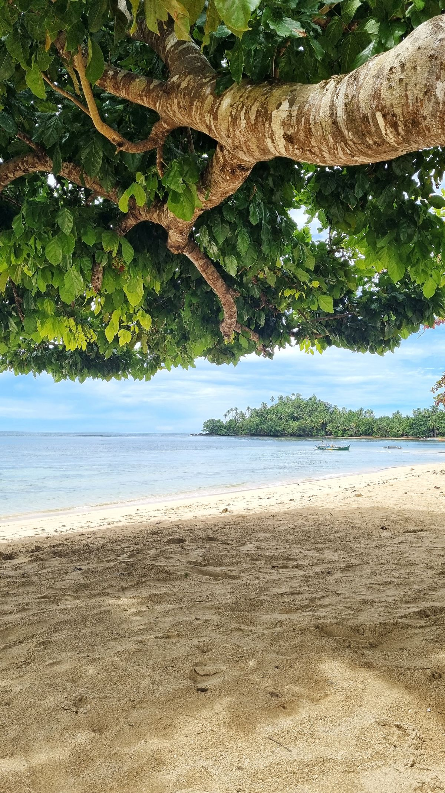
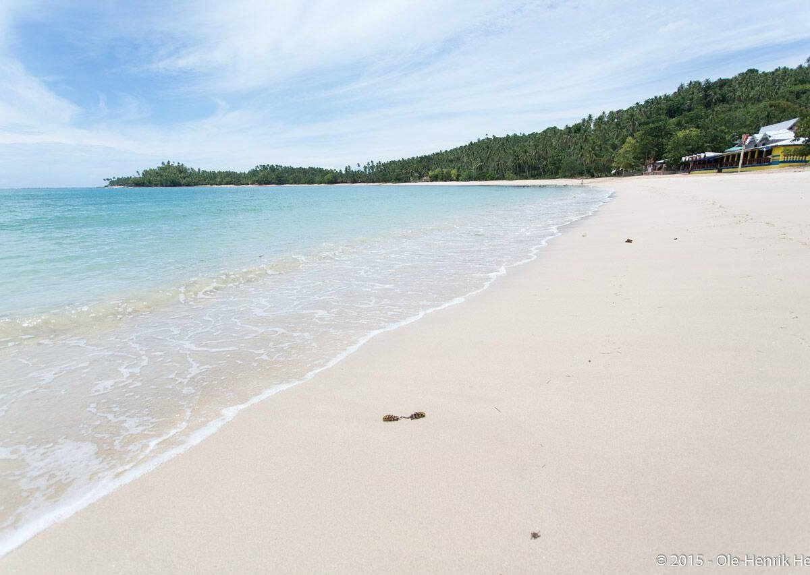
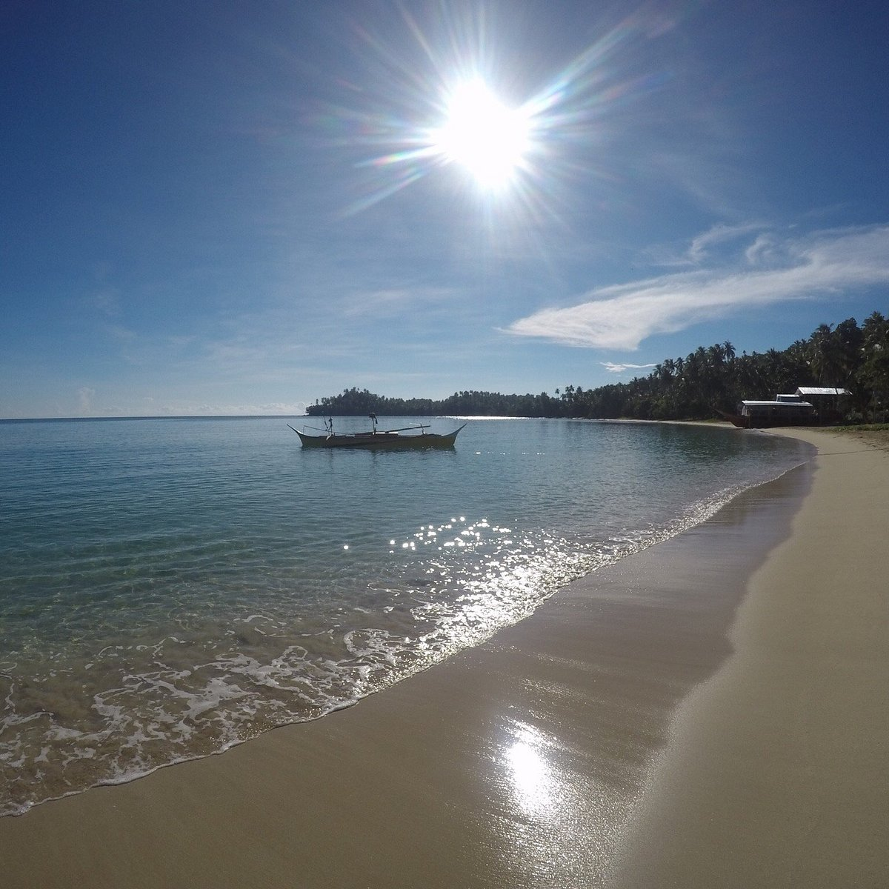

Cagwait White Beach is a long stretch of fine white sand located along a crescent-shaped bay. The beach is known for its calm and shallow waters, making it ideal for swimming and family outings. Its wide shoreline provides ample space for visitors to relax and enjoy the coastal scenery. The gentle waves and clear water create a peaceful and inviting atmosphere. The surrounding landscape adds to its charm, with greenery and open skies enhancing the view.
The beach’s unique curved shape resembles that of a famous international coastline. This natural formation helps protect the area from strong waves, maintaining its calm conditions. The sand is soft and clean, making it comfortable for walking and lounging. Visitors often appreciate the serene environment and scenic beauty. Overall, Cagwait White Beach offers a relaxing and family-friendly coastal experience.


Cagwait’s name reportedly derived from “mao rag wait,” a Visayan phrase describing the mouth-shaped bay. According to local accounts, American aviator Charles Lindbergh once likened the site to Hawaii’s Waikiki Beach. Since then, it has drawn regional visitors for its natural charm and unspoiled ambiance, retaining a quieter atmosphere compared to more commercialized Philippine resorts.
The beach lies within a natural cove bordered by coconut trees and calm blue waters. Its shoreline, likened to a human mouth when viewed from above, opens to the Pacific, creating gentle yet surfable waves. Visitors often enjoy swimming, beachcombing, and sunrise viewing, with the soft morning light reflecting over the white sands and aquamarine sea.
Cagwait White Beach offers a variety of amenities that enhance the comfort of visitors. Cottages and picnic areas are available for families and groups. Restroom facilities are maintained to accommodate tourists. Food stalls and vendors provide local dishes and refreshments. Open spaces allow for recreational activities and gatherings.
Visitors can enjoy swimming, sunbathing, and beach games along the shoreline. The calm waters make it safe for children and beginners. Photography is popular due to the scenic views and wide beach area. The beach is also suitable for events and celebrations. Relaxation is one of the main attractions of the site. These amenities and activities make the beach enjoyable for everyone.


Tourists can engage in various activities that highlight the beauty of Cagwait White Beach. Swimming is the most common activity due to the calm and shallow water. Visitors can also enjoy beach games such as volleyball. Photography is widely enjoyed because of the picturesque scenery. The wide shoreline allows for comfortable exploration.
Group gatherings and picnics are frequently held at the beach. Festivals and events provide cultural experiences for visitors. Some tourists prefer simply relaxing and enjoying the ocean view. Walking along the shoreline is a peaceful activity. The combination of leisure and social activities makes it appealing. Overall, the beach offers a well-rounded experience.
Cagwait White Beach is located in the municipality of Cagwait in Surigao del Sur. It can be reached by bus or private vehicle from major cities in the region. The road leading to the beach is generally accessible and well-maintained. Travel time depends on the starting point but is manageable. Signage helps guide visitors to the destination.
Local transportation such as tricycles and motorcycles are available within the area. These options provide convenient access from the town proper to the beach. Private vehicles offer a more comfortable alternative. The journey includes scenic views of coastal landscapes. Accessibility makes it a popular destination for tourists.